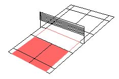
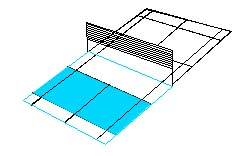
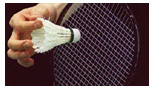
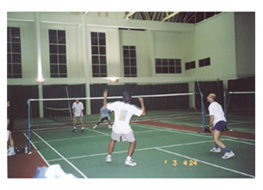

Badminton Basics
General Play
As
seen on the badminton court drawn below, there is a dark red
box. During general play the shuttle must land within the
opposing player's red box. On the line is in, meaning if any
part of the shuttle touches the line (even if it's the edge
of the feathers) the point is counted.
The light red shaded area indicates the service area. The
shuttle must land in the diagonally opposite side of the court.
The blue box indicates the doubles court for during general
play. Similarly, the light blue shaded area indicates the
service area. Note that the service area is short and wide
in comparison to the singles court.
When serving the shuttle, at the point of contact, the highest
point of the head of your racket must not be above your waist.
Additionally, the head of your racket must not be above your
wrist. Some part of both your feet must remain in contact
with the ground as you hit the shuttle.
The
shuttle must not touch the net on the way over. If the shuttle
lands within the boundaries of the court, the call is a 'let'
and the shuttle must be served again.
A player can only score when they are serving. Service is
started on the right hand side of your side of the court (when
the score is love-all). If your score is odd (1,3,5...) you
serve from the left side, if even (2,4,6...) on the right.
The game continues until one team reaches 15 points and
is at least two points ahead of their opponent.
Badminton can be a difficult game to master. Technique is
of the utmost importance. Size is not an issue; a small child
with good technique can easily beat a much larger adult. Just
remember: Practice makes perfect!
Shuttlecocks
Badminton
is one of the few sports that do not use a ball. Instead of
a ball, shuttlecocks, also called “birdies” or
“shuttles,” are hit back and forth over the net.
A shuttlecock can leave the racquet at over 220 miles per
hour! However, the shape of the shuttlecock quickly slows
down its speed, making is possible for the defender to return
some of these hard shots.
Shuttlecocks come in two types: plastic and feather. In
general, beginners play with plastic and intermediate/expert
with feather. Plastic shuttles cost more but last a lot longer,
suiting them well for players starting out. Feather shuttles
exhibit a more consistent flight pattern, and tend to fly
faster. They don't last very long - it's not uncommon for
international players to go through 20-30 in one game!
Shoes
You'll need a decent pair of court shoes, preferably indoor
court shoes rather than cross trainers (and definitely not
running shoes). You'll need to get decent grip with the floor
or you'll be sliding around everywhere. And the hall manager
won't be too pleased with your leaving black lines all over
his court, so get some non-marking soled shoes.
Two Types of Dropshots
There
are two types of dropshot you can attempt: the fast drop and
the slow drop. First we'll discuss the slow drop, which is
likely to be the type of drop you've been doing. Slow drops
should be hit to land as close to the net as possible. The
blue areas of the diagram show where to aim for.You need to
hit the shuttle softly, but using the same action as for normal
overhead clears or smashes. Again, practice will get you hitting
the spot consistently.
A well-placed fast drop is usually more effective than a
well-placed slow drop. This is because your opponent has much
less time to get to the drop, putting them under pressure.
Fast drops can be difficult to execute, as you're effectively
hitting a gentle smash. Try to get up as high as possible
- the higher you get the steeper the angle you can get. The
green areas of the diagram indicate where to aim for.
General Guidelines
- Hold the racket as if you were shaking hands with it
- Get side-on to play your shots
- Use your free arm to balance, and point at the shuttle
- Get behind the shuttle, and move forward into the shot
- Stay on your toes
- Have fun!
Glossary
| ACE |
A point scored using a hard drive into your opponent’s
court |
| BIRD/BIRDIE |
Another name for the shuttlecock |
| BLOCK |
A stroke in which the racquet is place in front of the
shuttle and gently rebounds the shuttle back. |
| CARRY |
An illegal stroke occurring when the shuttle is carried
by the racquet; similar to carry in volleyball |
| CROSS COURT |
Hitting the birdie diagonally over the net from one
side to the other |
| DINK/DROP SHOT |
A shot that barely clears the net and falls into the
opponent’s frontcourt |
| DOUBLE HIT |
An illegal hit; hitting the birdie twice to get it over
the net |
| DRIVE |
A hard hit place just over the top of the net. |
| FAULT |
Any infraction of the rules where the resulting penalty
is the loss of their service or point. |
| GAME POINT |
The point that causes the server to win the game |
| LET |
If the birdie gets caught in the net; the play is repeated |
| RACQUET |
The equipment used to hit the shuttle |
| RALLY |
Hitting the birdie back and forth over the net |
| SHUTTLECOCK |
The plastic, feathered, or nylon “bird”
that is hit back and forth |
| SMASH |
An overhead stroke hit downward with force |
| UNDERHAND |
A stroke that is hit upward when the birdie is below
shoulder height |
| WOOD SHOT |
Hitting the shuttle with the wood of the racquet rather
than the strings. (At one time, racquets were made only
of wood. Although today racquets are made of many different
types of materials, the term is still used.) |
Other Sports/Health Article:
Preventing
Burnout
|